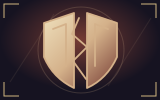
Rozdzielona garda
Zardzewiały brzeg
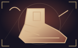
Czujny krok
Wotywna nić
Cichy dźwięk
Szpila schronienia
Żeton odwagi
Pasmo mchu
Okruch żaru
Kieszeń rosy
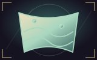
Mułowy woal
Zbiornik atramentu
Szklana runa
Notatka na marginesie
Blady indeks
Nagrobny prowiant
Posępna drzazga
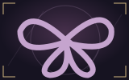
Pogrzebowy węzeł
Zimny obol
Miedziany przełącznik
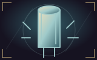
Zapasowy kondensator
Osłona podkładki
Klucz naciągu
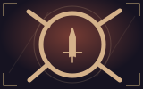
Cisza żelaza
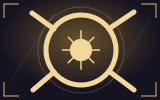
Ściszony hymn
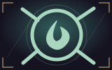
Zastygła pogoda
Pusty margines
Bez słów żałoby
Wrzeciono pustki
Wyrok zaćmienia
Nagrobny zegar
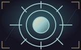